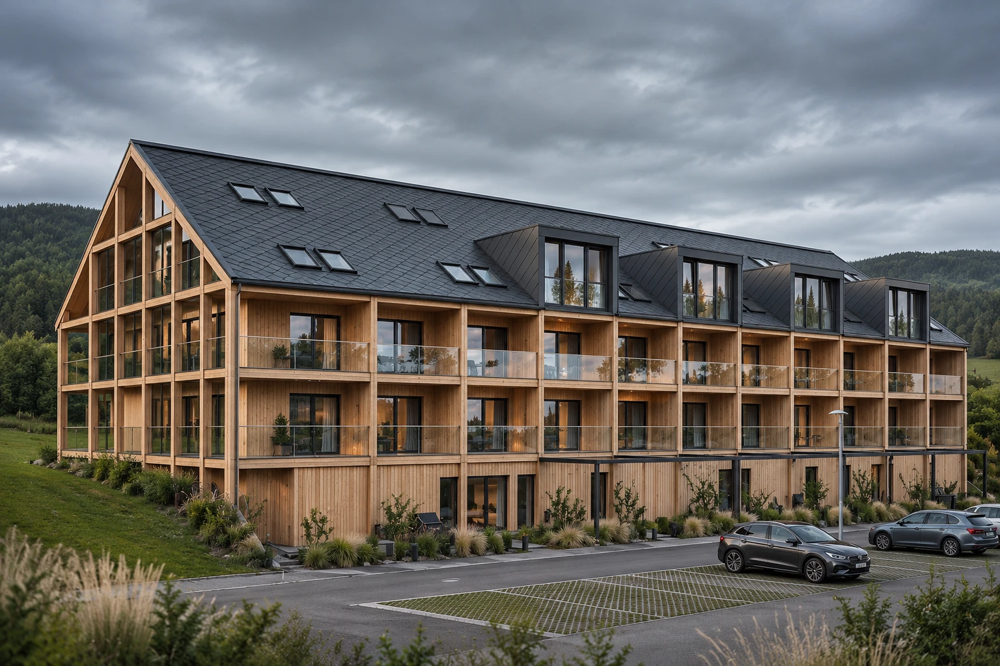

45 apartmánů
Dispozice 1+kk až 3+kk, wellness centrum s bazénem a 30 parkovacích stání.
Prémiový rezidenční projekt s 45 moderními apartmány, wellness centrem, bazénem a panoramatickými výhledy do krajiny.
Podílejte se na financování jeho výstavby prostřednictvím developerských dluhopisů s pravidelnou čtvrtletní výplatou úroků. Pod záštitou společnosti ARKEMAX INVEST a.s. jako ručitele projektu.

Klíčové investiční parametry
úroková sazba
minimální investice
výplata úroků
splatnost dluhopisů
Jesenická Vyhlídka je developerský projekt zaměřený na realizaci prémiových apartmánů v Jeseníkách.
Dispozice 1+kk až 3+kk, wellness centrum s bazénem a 30 parkovacích stání.
Projekt se nachází ve fázi přípravy a projekce.
Plánované období výstavby a předání apartmánů.
Aktuálně se projekt nachází ve fázi cca 40 % celkové výstavby.
Financování projektu prostřednictvím dluhopisových emisí zajišťuje společnost Jesenice Viewpoint s.r.o. jako emitent. Získaný kapitál je určen na dokončení projektu.
Jesenická Vyhlídka nestojí výhradně na prostředcích investorů. Pozemky a stávající stavby v hodnotě 35 milionů Kč byly financovány z vlastních zdrojů.
Celkový finanční plán projektu počítá s vlastním kapitálem ve výši 60 milionů Kč a dluhopisovým financováním až 120 milionů Kč.
| Použití kapitálu | Vlastní zdroje | Dluhopisy | Celkem |
|---|---|---|---|
| Pozemky a stávající stavby již financováno | 35 mil. Kč | — | 35 mil. Kč |
| Výstavba a dokončení projektu | 25 mil. Kč | 120 mil. Kč | 145 mil. Kč |
| Celkem | 60 mil. Kč | 120 mil. Kč | 180 mil. Kč |
60 mil. Kč vlastních zdrojů představuje třetinu plánovaného rozpočtu projektu. Zbývající dvě třetiny mají být financovány prostřednictvím dluhopisových emisí.
Investujte do projektu Jesenická Vyhlídka prostřednictvím tří dluhopisových emisí s pevnou úrokovou sazbou od 8 do 10 % ročně.
Zvolte výši investice a zjistěte odpovídající úrokovou sazbu, pravidelný úrokový příjem a podmínky konkrétní emise.
| Modelové datum výplaty | Úrok |
|---|
Modelové čtvrtletní termíny odpočítané od data splatnosti. Skutečné termíny stanovují emisní podmínky.
Výpočty jsou orientační a před zdaněním. Skutečné úroky závisejí na emisních podmínkách, datu úpisu a příslušném úrokovém období. Pevný úrok nepředstavuje záruku vyplacení výnosů.
Za závazky z dluhopisů Jesenická Vyhlídka stojí vedle samotného emitenta také dvě ručitelské společnosti. Zajištění doplňuje zástavní právo k obchodnímu podílu emitenta a ustanovený agent pro zajištění.
Společnost ARKEMAX INVEST a.s. poskytuje ručitelské prohlášení vztahující se ke splacení dluhopisů a výplatě úrokových výnosů. Její hospodaření je doloženo veřejně dostupnými auditovanými účetními závěrkami.
Další úroveň zajištění představuje samostatné ručitelské prohlášení společnosti Hofer Capital & Consulting s.r.o., vztahující se k závazkům emitenta z dluhopisů.
Součástí zajištění je zástavní právo k obchodnímu podílu ve společnosti Jesenice Viewpoint s.r.o. Zástavní právo je zřízeno ve prospěch agenta pro zajištění.
Mgr. Ing. Dominik Fries, advokát, vykonává funkci agenta pro zajištění podle emisních podmínek.
Rozsah zajištění a podmínky jeho uplatnění stanovují emisní podmínky. Zajištění nezaručuje úplné splacení investice.
Nejčastější otázky k projektu Jesenická Vyhlídka a jeho dluhopisovému programu.
Máte další otázky? ↗Zaujala vás investiční příležitost Jesenická Vyhlídka? Zanechte nám kontakt a poskytneme vám potřebnou dokumentaci k dluhopisovým emisím. Rádi vám také zodpovíme případné dotazy k investičním podmínkám.
Co získáte:
Odeslání formuláře vás k investici nijak nezavazuje.